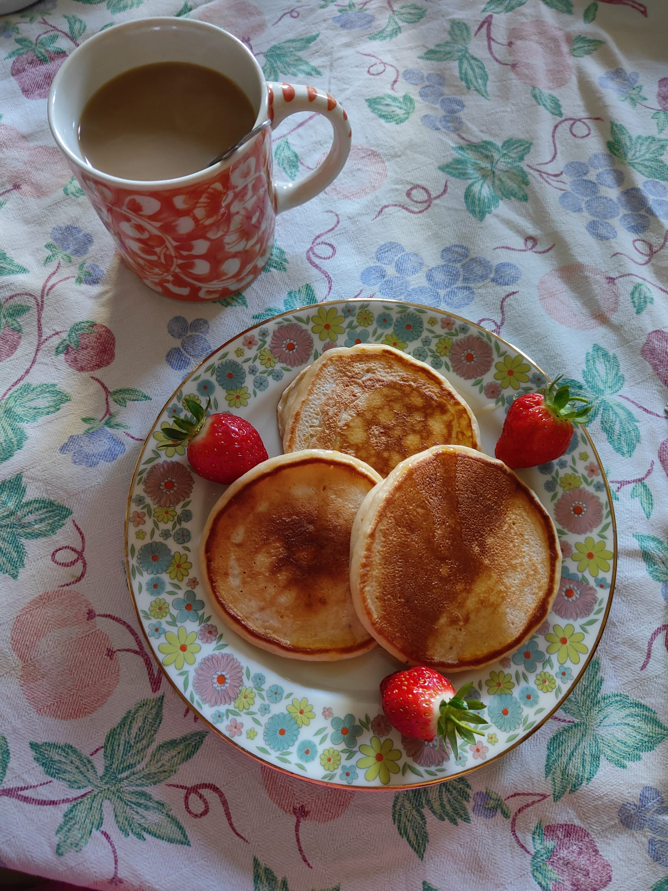

Pancakes
Home

Description
Soft yogurt pancakes, to start your day in the best way!
Ingredients
- Yogurt 100g
- 1 Egg
- Honey 1 tsp
- Flour 100g
- Baking Powder 1 tsp
Steps
- In a large bowl mix yogurt, egg and honey.
- Sift the flour and baking powder while mixing with the wet ingredients.
- Heat a pan and cook the pancakes on one side, flip it when the dough starts to bubble.
- When the pancakes are done cooking on both sides serve them with your preferred toppings (e.g. fresh fruit and maple syrup)